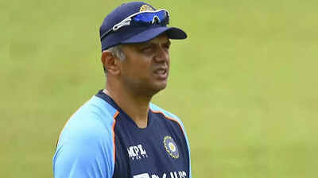
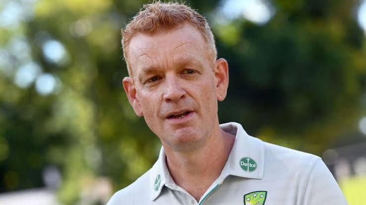
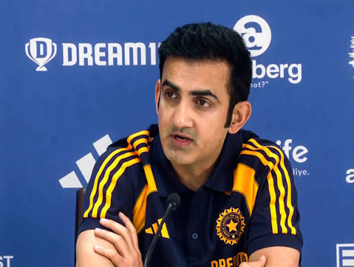

The Indian cricket team is one of the most successful teams in the history of cricket.
The Australian cricket team is known for its competitive spirit and has won multiple ICC Cricket World Cups.
The England cricket team is known for its strong batting and bowling performances.
The South African cricket team is known for its aggressive style of play and has produced many legendary cricketers.
The New Zealand cricket team, also known as the Black Caps, is known for its resilience and has achieved significant success in international cricket.

The Indian team head is known for their strategic leadership and experience.

The Australian team head is known for their strategic leadership and experience.

Gautam Gambhir is a former Indian cricketer and a key player in the Indian cricket team.
He played a crucial role in India's victories in the 2007 ICC World Twenty20 and the 2011 ICC Cricket World Cup.